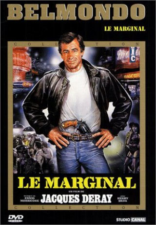

#11240 Der Außenseiter
 
 IMDB-Wertung: 6.4 / 10
IMDB-Wertung: 6.4 / 10  Metascore: 0
Metascore: 0 
Fed-up with the inefficiency of the Marseille police, Paris sends drug-enforcement specialist Philippe Jordan to Marseille. He's supposed to assist the local law enforcement dismantle the drug networks, especially mobster Sauveur Mecacci's network. So far, Mecacci has managed to elude capture or successful prosecution by local authorities. However, Inspector Philippe Jordan's unorthodox law enforcement style may prove efficient against Mecacci if Jordan receives a free-hand green-light from the Marseille police bosses and if he survives the frequent attempts against his life, of course. Once at work, Inspector Philippe Jordan's rough style creates mayhem in the city of Marseille and triggers numerous complaints from the Mayor's Office, from outraged citizens and from the lawyers of a scared Mecacci who wants to see Jordan dead. These things, in turn, tell Jordan he's on the right track.
Jahr: 1983
Dauer: 95 Minuten
FSK: 16
Land: Frankreich Studio: Constantin VideoTonspuren:
Untertitel:
Auflösung: 1080p (1792x1080) Größe: 6809 MB
Genre: Action, Thriller, Drama, Krimi
Regisseur: Jacques Deray
Drehbuch: Jacques Deray, Jean Herman, Michel Audiard
Soundtrack: Ennio Morricone
Darsteller:
 Jean-Paul Belmondo als Commissaire Philippe Jordan
Jean-Paul Belmondo als Commissaire Philippe Jordan Henry Silva als Sauveur Meccacci
Henry Silva als Sauveur Meccacci- Maurice Barrier als Tonton
 Tchéky Karyo als Francis Pierron
Tchéky Karyo als Francis Pierron Roger Dumas als Inspecteur Simon
Roger Dumas als Inspecteur Simon Michel Robin als Alfred Gonet dit Freddy le chimiste
Michel Robin als Alfred Gonet dit Freddy le chimiste Jean-Claude Dreyfus als Le travesti
Jean-Claude Dreyfus als Le travesti- Carlos Sotto Mayor als Livia Maria Dolores
- Pierre Vernier als Inspecteur Rojinski
- Claude Brosset als Antonio Baldi
- Jacques Maury als Maître Cappa
- Gabriel Cattand als Contrôleur Dumas
- Jacques David als
- Jean-Louis Richard als Antoine
- Didier Sauvegrain als Un tueur de Meccaci / Alfred's murderer
- Stéphane Ferrara als L'indic assassiné
- Daniel Breton als Un homme de main de Meccacci
- Jean-Roger Milo als Le gardien du squatt
- Dany Kogan als
- Henri Attal als
- Joseph Pertic als
- Maurice Auzel als Inspecteur Rosenberg
- Pierre Belot als
- Mehmet Ulusoy als
- Jacques Van Dooren als
- Michel Berreur als Tourian
- Jean-Louis Airola als
- Corinne Brodbeck als
- Yves Gabrielli als
- Marc Chpill als
- Christian Bor als
- Jean-Hugues Lime als Un squatteur
- Gérard Moisan als
- Philippe Héliès als
- Serge Uzan als
- Jacky Venon als
- Fatiha Gagelin als
- Laetitia Gabrielli als
- Sidney Kotto als
- Isabelle Lacamp als
- Frederique Lafond-Molinari als
- Aurora Maris als
- Lin Tyson als
- Mohamed Adi als
- Jean Toscan als
- Daniel Perche als
- Patrick Paillol als
- René Chateau als Le maître d'hôtel du restaurant (uncredited)
- Daniel Dudon als Petit rôle (uncredited)
- Jean Herman als (uncredited)
Datei: X:\1983\Außenseiter, Der (1983, FSK16, 1792x1080).mkv seit 29.05.2019
Festplatte: HD 1980-1986
 Es gibt insgesamt 35 Filme in der Gruppe '1983'
Es gibt insgesamt 35 Filme in der Gruppe '1983'